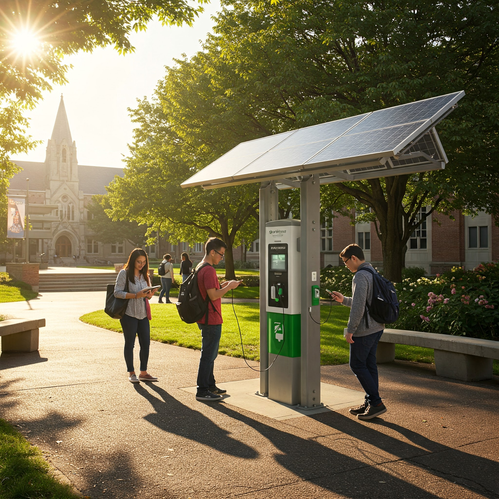

Energía limpia y renovable para tus dispositivos en el Campus Nainari.
Conoce Más
Desarrollar e implementar estaciones de recarga alimentadas por energía solar en el campus Nainari de ITSON. Nuestro objetivo es ofrecer una alternativa sostenible para cargar dispositivos electrónicos, reduciendo la dependencia de la red eléctrica convencional.
Estas estaciones no solo proporcionan un servicio práctico a la comunidad universitaria, sino que también sirven como una herramienta educativa, demostrando el potencial y la viabilidad de las energías renovables en nuestro entorno diario. Queremos fomentar una cultura de sostenibilidad en el campus.
Utilizamos la energía del sol, una fuente 100% renovable y no contaminante, reduciendo la huella de carbono del campus.
Al ofrecer una alternativa solar, disminuimos la demanda de electricidad generada por fuentes convencionales.
Promovemos la importancia de las energías renovables y la sostenibilidad entre estudiantes, profesores y personal.
Nuestras estaciones están diseñadas para ser eficientes, seguras y duraderas.
Explora el mapa para encontrar las estaciones de recarga solar en el Campus Nainari.
Simplemente conecta tu dispositivo a uno de los puertos USB disponibles. La carga comenzará automáticamente si la estación tiene energía almacenada o está generando activamente.
No, el uso de las estaciones de recarga solar es completamente gratuito para todos los miembros de la comunidad universitaria de ITSON.
Sí, las estaciones están equipadas con baterías que almacenan la energía solar durante el día. Esto permite que puedas cargar tus dispositivos incluso cuando no hay sol directo, aunque la disponibilidad dependerá del nivel de carga de la batería y del uso reciente.
Al igual que en cualquier espacio público, te recomendamos no dejar tus dispositivos desatendidos mientras se cargan. La seguridad de tus pertenencias es tu responsabilidad.
Si tu duda no fue resuelta en la sección de FAQ o tienes alguna sugerencia sobre el proyecto, contáctanos.
Enviar un Correo